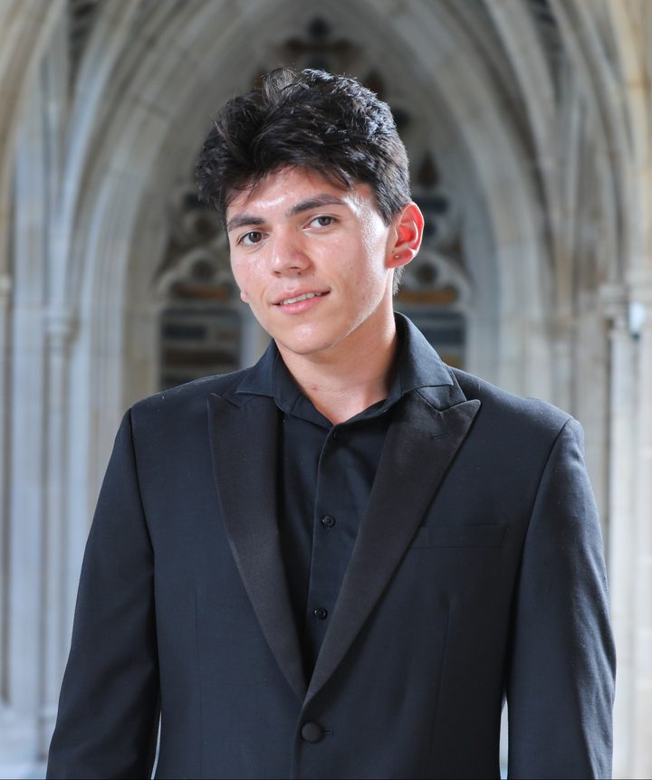
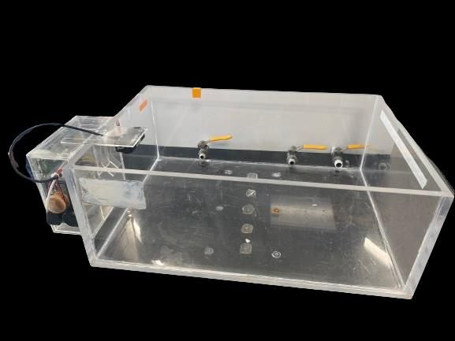
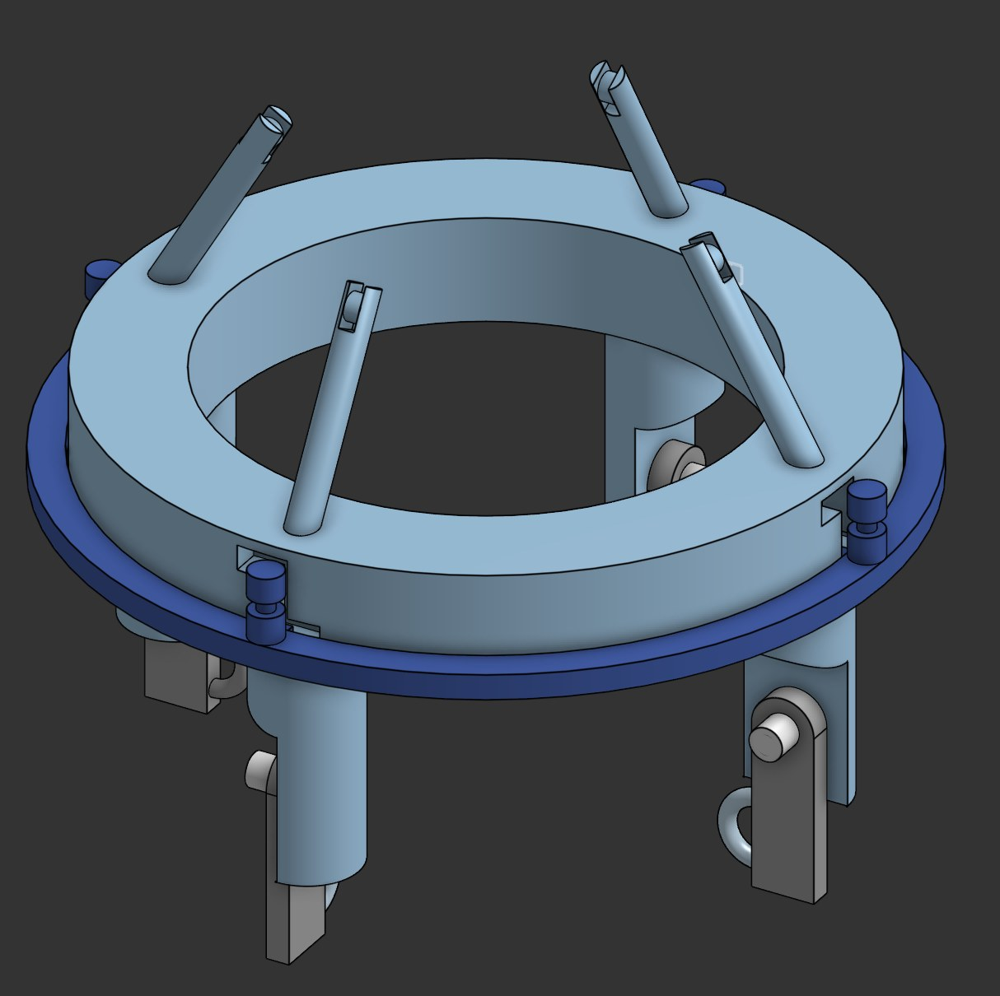
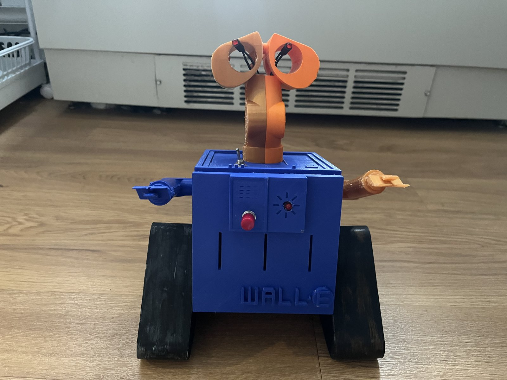
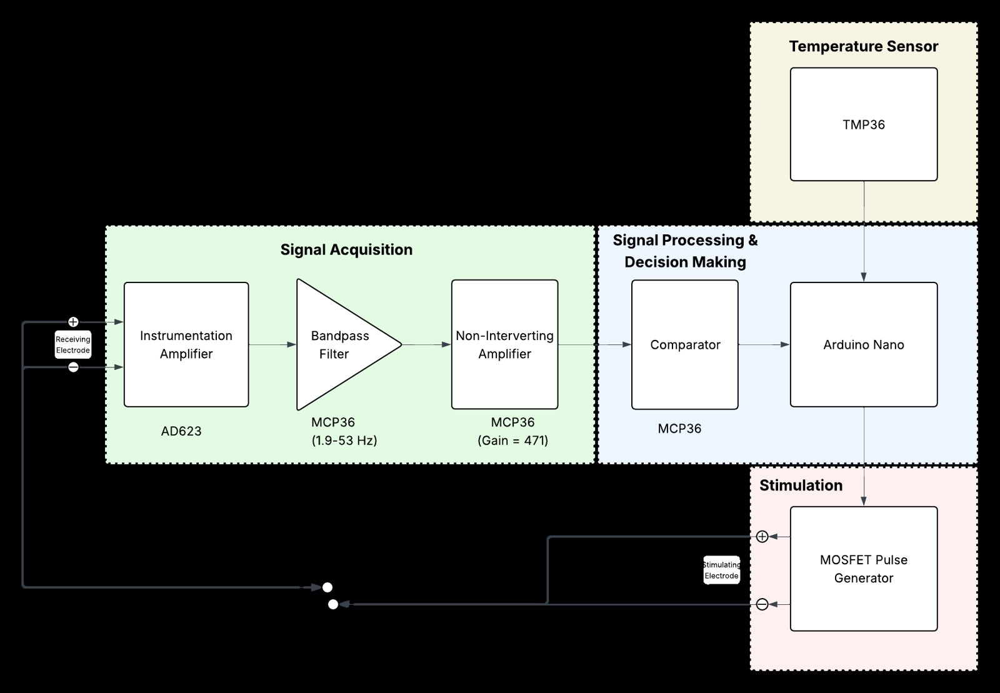

Order up
Your latte is ready!
About me
About me
Latte
I'm a biomedical engineering senior at Duke, Class of 2027, earning a Certificate in Innovation & Entrepreneurship. I'm an A. James Clark Scholar and a Duke BME Design Fellow.
My favorite part of a project is the client check-in that turns up a requirement nobody wrote down, and then the prototype that shows whether we listened. I'm most interested in medical device design and R&D, and I'm exploring product management.
When I'm not in the lab, I'm usually behind the bar at BSEISU Coffee. Dialing in espresso is a small design loop: change one variable, taste, adjust. I work on hardware the same way.
Projects
Cortado
EGR 101 · Fall 2023 · Client project, team of 4
Water level alarm for ultrasound test tanks
A Duke lab was worried about tanks flooding. We built a $56 clamp-on sensor that buzzes and pings Slack when a tank overflows or leaks.
Tasting notes
- Client interviews
- Pugh matrices
- Circuit build & soldering
- Laser-cut acrylic
- Arduino Nano ESP32

Duke BME Design Fellows · Summer 2026 · Designed and built for a cancer research lab
LED microscope stage
A purely mechanical unlock, slide, and lock mechanism that switches a mouse-imaging setup between two microscope configurations in under 5 seconds.
Tasting notes
- Onshape
- 3D printing
- Client check-ins
- Specs & testing

BME 254 · Spring 2025
Lightbox: an LED control system
A Wall-E-themed 3D-printed enclosure with a custom KiCad PCB and Arduino firmware, validated with linear fits above R² = 0.998.
Tasting notes
- Onshape
- KiCad PCB
- Arduino C/C++
- Python data analysis

BME 354 · Spring 2026 · Team of 2, I led the analog circuitry
Pacemaker prototype
Signal acquisition, R-wave detection, and a MOSFET stimulation circuit, tested on a frog heart with heart-rate error under 1%.
Tasting notes
- Circuit design
- Instrumentation amps
- Oscilloscope
- Verification
Experience
Cappuccino-
Fall 2026
BME Senior Design · Team of 5, in progress
Clinical needs-finding with a general surgeon and a neuro ICU nurse. Our concept automates crushing, mixing, and flushing medications to keep feeding tubes from clogging.
-
May – Jul 2026
Design Fellow · Duke BME Design Fellows
Scoped two device projects with two clinical clients, then designed and built a microscope stage mechanism for a cancer research lab.
-
Jun – Jul 2026
Teaching Assistant · ODE Summer Design Camp
Coached 28 students from sketch to 3D-printed prototype, taught 2D drawing and extrusion in Onshape, and kept 14 Ultimaker S3 printers running.
-
Sep 2025 – now
Barista · BSEISU Coffee
Espresso, milk, and a steady line of customers.
-
May 2024 – now
Vice President · SHPE at Duke
Built the chapter's sponsorship package (events with Lenovo, Deloitte, and Google) and founded mentorSHPE, which grew from 4 to 17 mentor pairs.
-
May – Jul 2024
Data+ Intern · Duke Data+, with Oak Ridge National Laboratory
Co-built a synthetic training-data pipeline and trained 8 PyTorch DeepLabv3 models to remove background artifacts from neutron scattering images.
CAD & fabrication
Onshape, Fusion 360, 3D printing, laser cutting, printer troubleshooting
Electronics
Circuit design, KiCad PCB design, soldering, oscilloscope, Arduino
Code & data
Python (NumPy, Pandas, SciPy, PyTorch), C/C++, Zephyr, Git
Design & product
Client and user interviews, user needs and specs, Figma, customer discovery, Jira
Interests
Macchiato-
Devices built around one user
I like engineering that starts with a specific clinician, researcher, or patient. This year that means feeding tubes: my senior design team is working with a general surgeon and a neuro ICU nurse to stop medication clogs.
-
Product management
In class I proposed an AI chatbot onboarding feature for Pendo after interviewing Pendo employees, and mocked it up in Figma. This fall my team is building "grain," a tool that adds missing context to social media claims, starting from 10 customer interviews and journey maps.
-
Mentoring
I founded mentorSHPE, which pairs underclassmen with upperclassmen in Duke's SHPE chapter and grew from 4 pairs to 17. I've also mentored 8 high school juniors through Durham AIM and led professional development for the Clark Scholars.
-
Teaching people to make things
As a camp TA I helped 28 students turn sketches into 3D-printed prototypes, and taught them to slice their own prints once they were ready.
-
Coffee, obviously
I've been a barista at BSEISU Coffee since September 2025. It's where this whole menu came from.
Let's grab a coffee.
I'm looking for roles and co-ops in medical device design, R&D, and product. If you're working on something for patients or clinicians, I'd love to hear about it.
- LinkedInlinkedin.com/in/fq19
- ResumeFernando_Quijada_Resume.pdf
- Based inDurham, NC